Úprava geometrie
V TecZone Ohyb máte k dispozici výkonný 2D editor skic, který můžete upravovat, čistit nebo přidávat do své geometrie. Pomocí klávesové zkratky S přejděte do režimu skicování. Editor zobrazí díl v rozloženém zobrazení.
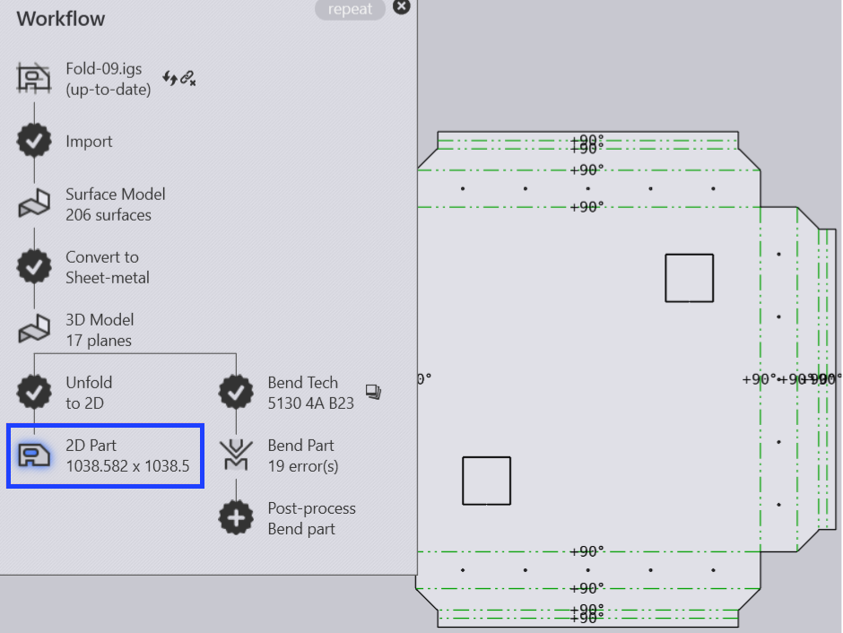
V rozbaleném zobrazení klikněte na ikonu Sketch nebo stiskněte klávesovou zkratku S.
Otevře se menu s různými ikonami pro zpracování rozvinutí:
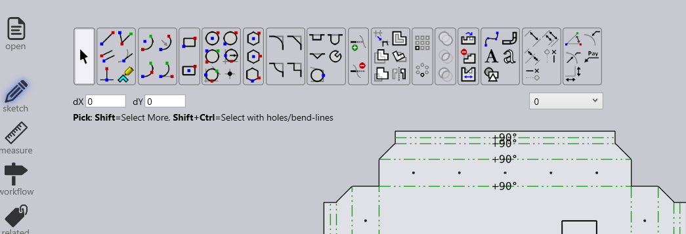
Panel skic
| Ikona | Symbol | Význam |
|---|---|---|
Select |
Výběr objektů, čar, zadání atd. |
|
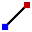 |
Line |
Skicování čáry |
Connected line |
Nakreslí libovolný počet čar |
|
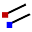 |
Parallel |
Nakreslí rovnoběžku s čárou |
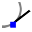 |
Tangent Line |
Nakreslí tečnu ke křivce |
Bendline |
Nakreslí normální čáru k čáře |
|
Center-Point Arc |
Skicování linie ohybu |
|
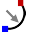 |
2-Point Arc |
Nakreslí oblouk od středového bodu, počátečního bodu a koncového bodu |
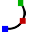 |
3-Point Arc |
Nakreslí kruhový oblouk přes dva definované body (počáteční a koncový bod) |
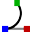 |
Tangent Arc |
Nakreslí oblouk, který je tečný k prvkům nákresu |
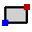 |
Rectangle |
Nakreslí obdélník |
Center-Point Rectangle |
Nakreslí obdélník ze středu |
|
Circle |
Nakreslí kružnici. Vyberte střed kružnice a přetažením kurzoru definujte poloměr nebo zadejte hodnotu poloměru |
|
2-Point Circle |
Nakreslí kružnici podle obvodu. Vyberte bod na obvodu, poté druhý bod a třetí bod. |
|
3-Point Circle |
Nakreslí kružnici podle obvodu. Vyberte bod na obvodu, poté druhý bod a třetí bod. |
|
2-Tangent Circle |
Nakreslí kružnici se dvěma tečnami. Zadejte průměr kruhu, poté vyberte první tečnu a poté druhou tečnu. |
|
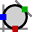 |
3-Tangent Circle |
Nakreslí kružnici se třemi tečnami. Zadejte průměr kruhu, poté vyberte první tečnu, poté druhou tečnu a poté třetí tečnu. |
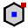 |
Inscribed Polygon |
Nakreslí kružnici se třemi tečnami. Zadejte průměr kruhu, poté vyberte první tečnu, poté druhou tečnu a poté třetí tečnu. |
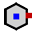 |
Circumscribed Polygon |
Nakreslí mnohoúhelník. Zadejte počet stran a vyberte středový bod a střed hrany strany |
Edge Polygon |
Nakreslí mnohoúhelník. Zadejte počet stran a definujte počáteční a koncový bod strany. |
|
Fillet |
Zaoblí rohový bod dvou prvků nákresu zadaným poloměrem, čímž vznikne tečný oblouk |
|
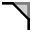 |
Chamfer |
Vytvoří zkosení na rohu průsečíku dvou prvků nákresu |
In-Fillet |
Ořízne roh na průsečíku dvou prvků nákresu zadaným poloměrem |
|
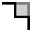 |
Corner Step |
Ořízne roh na průsečíku dvou prvků nákresu obdélníkem. Velikost obdélníku lze zadat předem. |
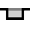 |
Edge Recess |
Vytvoří obdélníkový uvolňovací řez. Musíte zadat vzdálenost od rohu, hloubku uvolňovacího řezu a poté vybrat roh. |
Edge U-Cut |
Vytváří uvolňovací řez ve tvaru podélného otvoru. Musíte zadat vzdálenost od rohu, šířku uvolňovacího řezu, hloubku uvolňovacího řezu a poté vybrat roh. |
|
Edge V-Cut |
Vytvoří trojúhelníkový uvolňovací řez. Musíte zadat vzdálenost od rohu, šířku uvolňovacího řezu, hloubku uvolňovacího řezu a poté vybrat roh. |
|
Keyslot |
Vytvoří klíčový otvor v kruhu se zadanými hodnotami. |
|
Fillet 3-Seg |
Zaoblí tři propojené prvky nákresu |
|
Extend |
Vyberte prvek nákresu, který má být rozšířen |
|
Trim |
Vyberte prvek nákresu, který má být oříznut |
|
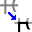 |
Join |
Slouží k oříznutí a spojení několika samostatných polyčar do jedné |
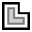 |
Offset |
Posun jednoho nebo více prvků nákresu, hrany nákresu modelu nebo ploch modelu o zadanou vzdálenost |
Move |
Vyberte prvek nákresu pomocí ctrl výběru referenčního bodu a přesuňte prvek nákresu |
|
Rotate |
Vyberte prvek nákresu pomocí ctrl výběru středu otáčení, poté počáteční bod a koncový bod, aby se prvek nákresu otočil |
|
Scale |
Vyberte prvek nákresu pomocí ctrl výběru základního bodu, poté počátečního referenčního bodu a koncového referenčního bodu pro změnu měřítka prvku nákresu |
|
Mirror |
Vyberte prvek nákresu pomocí ctrl, poté začátek linie zrcadlení a poté konec linie zrcadlení, aby se prvek nákresu zrcadlil |
|
Rectangle Array |
Pomocí lineárních vzorů můžete vytvořit více referencovaných kopií jednoho nebo více prvků nákresu, které můžete rozmístit v rovnoměrných vzdálenostech podél jedné nebo dvou lineárních drah. Klikněte na lineární vzor a zadejte požadované hodnoty |
|
Polar Array |
Pomocí kruhových vzorů můžete vytvořit více referencovaných kopií jednoho nebo více prvků nákresu, které můžete rozmístit ve stejných vzdálenostech kolem osy. Klikněte na kruhové vzory a zadejte požadované hodnoty |
|
Union |
Vyberte dva nebo více uzavřených prvků nákresu, abyste spojili povrchy mezi sebou |
|
Intersection |
Vyberte dva nebo více uzavřených prvků nákresu a vytvořte prostor řezání vybraných prvků |
|
Subtraction |
Vyberte dva nebo více uzavřených prvků nákresu, které chcete oříznout z povrchu |
|
Copy Notch |
Pomocí tohoto nástroje můžete vytvořit více kopií výseku podél hrany. Nejprve zadejte vzdálenost mezi kopiemi a počet kopií výseku, který chcete vytvořit. Poté vyberte výsek kliknutím na dvoučárové segmenty, které sousedí s výsekem |
|
Delete Notch |
Pomocí tohoto nástroje můžete smazat výsek v rohu nebo podél čáry. Klikněte na dvoučárové segmenty sousedící s výsekem a výsek bude odstraněn |
|
Mirror Notch |
Pomocí tohoto nástroje můžete zrcadlit výsek v rohu nebo podél čáry. Klikněte na dvoučárové segmenty sousedící s výsekem a výsek bude zrcadlen |
|
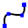 |
Spline |
Chcete-li začít novou spline křivku, klikněte na počáteční bod a jak budete klikat na další body, spline křivka se vytvoří. Pokud chcete spline křivku uzavřít, stiskněte klávesu ALT a poté klikněte |
Profile |
Zadejte délku základny, výšku příruby, tloušťku, úhel příruby, vnitřní poloměr a stiskněte klávesu Enter pro vytvoření profilu |
|
Text |
Slouží k nakreslení textu, který bude laserovým strojem vyznačen na dílu. Po kliknutí na toto nástrojové tlačítko se na vstupním panelu zobrazí pole pro zadání textu, velikosti a úhlu otočení |
|
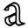 |
Truetype Text |
Slouží k převodu tvarů znaků v libovolném fontu TrueType na polyčáry. Na tyto polyčáry lze poté aplikovat laserové nástroje a provést jejich řezání. Při prvním kliknutí na toto tlačítko se zobrazí dialogové okno Font, ve kterém můžete vybrat písmo, které se použije pro text |
Common Shape |
Slouží k vytvoření několika běžných tvarů a jejich vložení do výkresu. Po kliknutí na toto tlačítko se zobrazí dialogové okno Vytvořit tvar, ve kterém můžete vybírat z palety běžných tvarů |
|
Simple Dimension |
Vyberte první kótovací bod, poté druhý kótovací bod a umístěte kótovanou čáru |
|
Baseline Dimension |
Vyberte první kótovací bod, poté druhý kótovací bod a umístěte kótovanou čáru |
|
Continue Dimension |
Vyberte první kótovací bod, poté druhý kótovací bod, umístěte kótovanou čáru a vyberte další kótovací bod |
|
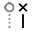 |
Horizontal Ordinate Dimension |
Rozměry ordináty jsou sada rozměrů, které se měří od ordináty nula ve výkresu. Vyberte referenční bod a umístěte kótování |
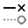 |
Vertical Ordinate Dimension |
Rozměry ordináty jsou sada rozměrů, které se měří od ordináty nula ve výkresu. Vyberte referenční bod a umístěte kótování |
Angular Dimension |
Vytvoří kótování úhlu. Vyberte první čáru a poté druhou čáru, na které chcete kótovat úhel |
|
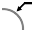 |
Radius Dimension |
Vytvoří kótování poloměru. Vyberte kružnici, u které chcete kótovat poloměr. Kótujte průměr pomocí ctrl |
Center Point Radius Dimension |
Vytvoří kótování s průběžnou vodicí čarou pro poloměr. Vyberte kružnici, u které chcete kótovat poloměr. Kótujte průměr pomocí ctrl |
|
Callout Dimension |
Slouží k přidávání poznámek k výkresu ve formě popisků. Chcete-li vytvořit popisek, zadejte text, který se má zobrazit, kliknutím určete, kam má šipka směřovat, a dalším kliknutím určete, kam se má text umístit. |
|
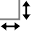 |
Segment Dimension |
Použijte k přidání kótování pro přímou čáru a zakřivené segmenty. Klikněte na segment, který chcete kótovat, a klikněte znovu, abyste umístili rozměr. Nebo podržte a klikněte na segment, aby se rozměr umístil automaticky. |